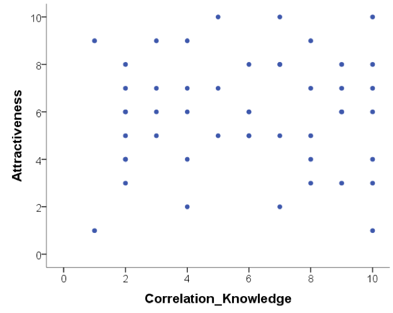
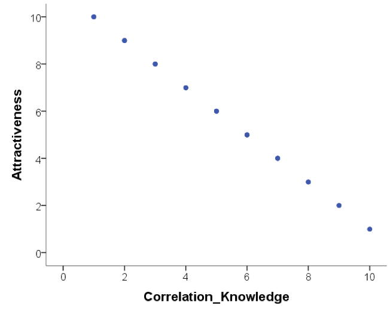

download.file("https://github.com/lu-psy-r/year1/blob/main/PSYC122/data/week11/122_week11_forStudents/exams.csv?raw=true", destfile = "exams.csv")1. Week 11 - Correlation
Written by Margriet Groen (some parts are adapted from materials developed by the PsyTeachR team at the University of Glasgow School of Psychology and Neuroscience; see here)
Today we will take a look at correlation as a measure of association between two numerical variables. We will create scatterplots to visualise correlations, we will run a correlation analysis and we will practise interpreting and reporting the results.
Lectures
The lecture material comes in two parts.
- Theory(~30 minutes) Watch this part before you complete the reading and the pre-lab activities. The video has captions, in case you find that helpful. You can download the slides and a transcript from the links below the video. Finally, if you open the video in ‘eStream’ by clicking on the green ‘e’ in the bottom right, you can navigate to separate sections of the video by clicking on the ‘chapters’ pane. This might be particularly useful if you quickly want to revisit a particular section.
- How to(~13 minutes) Watch this part after you’ve completed the pre-lab activities and before you attend the lab session.
Reading
The reading that accompanies the lectures this week and next week is from chapter 9 of the core text by Howell (2017).
Rougly, this week we’ll cover the material in sections 9.1 to 9.4, as well as sections 9.8 to 9.11 and section 9.15. Next week, we’ll cover the material in sections 9.5 to 9.7, and sections 9.12 to 9.13. Even if a section is not mentioned here, all of chapter 9 is relevant.
Pre-lab activities
After having watched the lectures on correlation and read the textbook sections you’ll be in a good position to try these activities. Completing them before you attend your lab session will help you to consolidate your learning and help move through the lab activities more smoothly.
Pre-lab activity 1: Visualing correlations
Have a look at this visualisation of correlations by Kristoffer Magnusson.
After having read the relevant sections of Howell (2017) Chapter 9, use this visualisation page to visually replicate the scatterplots in Figures 9.1 and 9.2 - use a sample of 100. After that, visually replicate the scatterplots in Figure 9.3.
Each time you change the correlation, pay attention to the shared variance (the overlap between the two variables) and see how this changes with the changing level of relationship between the two variables. The greater the shared variance, the stronger the relationship.
Also, try setting the correlation to r = .5 and then moving a single dot to see how one data point, a potential outlier, can change the stated correlation value between two variables.
Pre-lab activity 2: Guess the correlation
Now that you are well versed in interpreting scatterplots (scattergrams) have a go at this online app on guessing the correlation.
This is a very basic app that allows you to see how good you are at recognising different correlation strengths from the scatterplots. We would recommend you click the “Track Performance” tab so you can keep an overview of your overall bias to underestimate or overestimate a correlation.
Is this all just a bit of fun? Well, yes, because stats is actually fun, and no, because it serves a purpose of helping you determine if the correlations you see in your own data are real, and to help you see if correlations in published research match with what you are being told. As you will have seen from the above examples, one data point can lead to a misleading relationship and even what might be considered a medium to strong relationship may actually have only limited relevance in the real world. One only needs to mention Anscombe’s Quartet to be reminded of the importance of visualising your data, which leads us to the final pre-lab activity for this week.
Pre-lab activity 3: Anscombe’s quartet
Anscombe (1973) showed that four sets of bivariate data (X, Y) that have the exact same means, medians, and relationships can look very different when plotted. You can read more about this here.
All in this is a clear example of why you should visualise your data and not to rely on just the numbers.
Pre-lab activity 4: Getting ready for the lab class
Remind yourself of the basics of how to work with RStudio and get your files ready
You might want to re-visit the materials that John and Tom provided in PSYC121:
Create a folder for Week 11.
Download the 122_week11_forStudents.zip file and upload it into the new folder in RStudio Server you created at the previous step.
If you have difficulty uploading files to the server
If you get error messages when attempting to upload a file or a folder with files to the server, you can try the following steps:
- Close the R Studio server, close your browser and start afresh.
- Open the R Studio server in a different browser.
- Follow a work around where you use code to directly download the file to the server. The code to do that will be available at the start of the lab activity where you need that particular file. The code to download the file you need to complete the quiz is below.
Lab activities
In this lab, you’ll gain understanding of and practice with:
- constructing and interpreting scatterplots
- running correlation analysis and interpret the results
- reporting the results in APA format
- constructing a correlation matrix in APA format
- when and why to apply correlation analysis to answers questions in psychological science
Lab activity 1: Interpreting correlation
Question 1
Below are scatterplots that show the relationship between ‘how much you know about correlation and how attractive you appear to members of the opposite (&/or same) sex’. Choose the type of correlation (strength and direction) displayed in each graph using one of the following:
- Perfect positive correlation
- Perfect negative correlation
- Strong positive correlation
- Strong negative correlation
- Moderate positive correlation
- Moderate negative correlation
- Null correlation
Figure A 
Figure B 
Figure C 
Figure D 
Note
For the following questions, explain your chosen answer based on the statistic given, not on why you think the correlation may or may note make ‘logical’ sense.
Question 2
Suppose it was observed that there is a correlation of r = -.81 between a driver’s age and the cost of car insurance. This correlation would mean that, in general, older people pay more for car insurance.
TRUE or FALSE? Explain why.
Question 3
Suppose that there is a correlation of r = .87 between the length of time a person is in prison and the amount of aggression the person displays on a psychological inventory administered at release. This means that spending a longer amount of time in prison causes people to become more aggressive.
TRUE or FALSE? Explain why.
Question 4
A significant correlation was found between having great hair and performance in correlation labs. The correlation coefficient was .7. How much variance in correlation lab performance can the ‘greatness’ of your hair explain?
- 51%
- 70%
- 49%
- 30%
- Who cares I’ve got great hair.
What was the reason for your answer?
What is this ‘new coefficient’ called?
Lab activity 2: Visualising, calculating and reporting correlations
Watch the ‘How to’ video
If you haven’t done so already, this is a good time to watch the ‘How to’ video (here Section 1) on ‘How to conduct a correlation analysis using R’.
Going back to the data discussed in the ‘How to’ video (see Section 1), you’ll remember it contains data from 25 8-year-old children on:
- a standardised test of reading ability (Abil)
- intelligence (IQ)
- the number of minutes per week spent reading in the home (Home)
- and the number of minutes per week spent watching TV (TV)
In the video on ‘How to conduct correlation analysis using R’ we looked at the correlation between reading ability and intelligence. Now, let’s look at the correlation between number of minutes per week spent reading in the home and watching TV.
Set your working directory
The folder you were asked to download under ‘Pre-lab activity 4: Getting ready for the lab class’ contains the datafile (“MillerHadenData.csv”). Make sure you have set your working directory to this folder by right-clicking on it and selecting ‘Set as working directory’.
Do this if you couldn’t upload files to the server
If you experienced difficulties with uploading a folder or a file to the server, you can use the code below to directly download the file you need in this lab activity to the server (instead of first downloading it to you computer and then uploading it to the server). Remember that you can copy the code to your clipboard by clicking on the ‘clipboard’ in the top right corner.
download.file("https://github.com/lu-psy-r/year1/blob/main/PSYC122/data/week11/MillerHadenData.csv?raw=true", destfile = "MillerHadenData.csv")
New R Markdown script
Before we begin, make sure you have started a new R Markdown script. If you need a reminder of how to do that, please revisit week 6 of PSYC121 (here).
Step 1. Add the code to load the
broomand thetidyverselibraries in a new code chunk. If you are unsure, you can look at the ‘Hint’ below for a clue by expanding it. After that, if you are still unsure, you can view the code by expanding the ‘Code’ section below.
Hint
Use the library()function. Remember to put it inside a ‘code chunk’ in your R Markdown script.
Code
The code to do this is below.
library(broom)
library(tidyverse)Step 2. Read in the data. You should now see a dataframe with 25 observations and 5 variables in the ‘Environment’. Click on it to view it.
Hint
Use the read_csv()function.
Code
The code to do this is below.
mh <- read_csv("MillerHadenData.csv")Step 3. Construct a scatterplot of the relationship between ‘Home’ and ‘TV’. Also add a line of best fit and make sure you use clear labels for your axes.
Hint 1
Use the ggplot()function in combination with geom_point() and geom_smooth(). Make sure you use clear labels for your axes by using labs().
Hint 2
Below is a template of the code, make sure to add the data frame and the relevant variable names. Also add clear labels for your axes.
ggplot(DATA, aes(x = , y = )) +
geom_point() +
geom_smooth(method = "lm", se = FALSE) +
theme_bw() +
labs(x = "", y = "")
Code
The code to do this is below.
ggplot(mh, aes(x = Home, y = TV)) +
geom_point() +
geom_smooth(method = "lm", se = FALSE) +
theme_bw() +
labs(x = "Time spend reading at home", y = "Time spend watching TV at home")Question 3a: What can you tell from the scatterplot about the direction of the relationship? Write a few sentences in your R Markdown script to describe the relationship.
Step 4. Conduct the correlation analysis.
Hint 1
Use the cor.test()function in combination with tidy().
Hint 2
Below is a template of the code, make sure to add the data frame and the relevant variables names.
results <- cor.test(DATA$X,
DATA$Y,
method = "pearson",
alternative = "two.sided") %>%
tidy()
results
Code
The code to do this is below.
results <- cor.test(mh$Home,
mh$TV,
method = "pearson",
alternative = "two.sided") %>%
tidy()
resultsOnce you’ve run this code chunk, the output should appear in your R Markdown script and you can answer the questions below using that output. You can also pull out the different pieces of information by using the pull() function and round the values using the round() function, like this:
r <- results %>%
pull(estimate) %>%
round(2)Question 4a: What is the correlation coefficient (Pearson’s r)?
Question 4b: What is the p value?
Question 4c: Is the correlation significant at the p < .05 level?
Question 4d: What are the degrees of freedom you need to report?
Step 5. Calculate how much variance in ‘time spent reading’ can be accounted for by ‘time spent watching TV’?
As discussed in the theory lecture, this is referred to as the ‘coefficient of determination’ or ‘R-squared’. To calculate it, you square the value for Pearson’s r. To calculate how much variance in one variable is accounted for by the other variable, you multiply it by 100 and round it to 0 decimals.
Step 6. Write a few sentences in which you report this result, following APA guidelines.
Lab activity 3: Hazardous alcohol use and impulsivity
Researchers were interested in the relationship between hazardous alcohol use and impulsivity (making unplanned, rapid decisions without thinking or ‘acting on a whim’). To investigate the relationship, 20 participants completed both the alcohol use disorder identification test (AUDIT; Saunders, Aasland, Babor, de la Fuente, & Grant, 1993) and Barratt’s Impulsiveness Scale (BIS-11) (Patton, Stanford, & Barratt, 1995).
Before we begin
Assuming you are using the same R Markdown script as for the previous lab activity, you should already have code to load the broom and the tidyverse libraries. If this is a new session, you just need to re-run that code chunk to ensure they are loaded. At this point, it is a good idea to clear your environment to avoid any confusion between data frames or values. You can do this by clicking on the broom icon on the top right of the Environment pane. The data file (“alcoholUse_Impulsivity.csv”) is in the folder you were asked to download under ‘Pre-lab activity 4: Getting ready for the lab class’. As long as that folder is set as your working directory, you are good to go.
Do this if you couldn’t upload files to the server
If you experienced difficulties with uploading a folder or a file to the server, you can use the code below to directly download the file you need in this lab activity to the server (instead of first downloading it to you computer and then uploading it to the server). Remember that you can copy the code to your clipboard by clicking on the ‘clipboard’ in the top right corner.
download.file("https://github.com/lu-psy-r/year1/blob/main/PSYC122/data/week11/122_week11_forStudents/alcoholUse_Impulsivity.csv?raw=true", destfile = "alcoholUse_Impulsivity.csv")Step 1. Read in the data. You should now see an object containing the data in the ‘Environment’.
Question 1a: How many variables does it have?
Hint
Use the read_csv()function.
Code
The code to do this is below.
data <- read_csv("alcoholUse_Impulsivity.csv")Step 2. Plot the relationship between hazard alcohol use and impulsivity using a scatterplot and a line of best fit
Hint 1
Use the ggplot()function in combination with geom_point() and geom_smooth(). Make sure you use clear labels for your axes by using labs().
Hint 2
Use this code template and add the name of the data frame and the variables. Also add informative labels for your axes.
ggplot(, aes(x = , y = )) +
geom_point() +
geom_smooth(method = "lm", se = FALSE) +
theme_bw() +
labs(x = "", y = "")
Code
The code to do this is below
ggplot(data, aes(x = hau, y = imp)) +
geom_point() +
geom_smooth(method = "lm", se = FALSE) +
theme_bw() +
labs(x = "Hazardous Alcohol Use", y = "Impulsivity")Question 2a: What can you tell from the scatterplot about the direction of the relationship?
Step 3. Conduct the correlation analysis.
Hint 1
Use the cor.test()function in combination with tidy().
Hint 2
Below is a template of the code, make sure to add the data frame and the relevant variables names.
results <- cor.test(DATA$X,
DATA$Y,
method = "pearson",
alternative = "two.sided") %>%
tidy()
results
Code
The code to do this is below.
results <- cor.test(data$hau,
data$imp,
method = "pearson",
alternative = "two.sided") %>%
tidy()
resultsQuestion 3a: What is the correlation coefficient (Pearson’s r)?
Question 3b: What is the p value?
Question 3c: Is the correlation significant at the p < .05 level?
Question 3d: What are the degrees of freedom you need to report?
Question 3e: How much variance in ‘impulsivity’ can be accounted for by ‘hazardous alcohol use’?
Question 3f: Give three logically possible directions of causality, indicating for each direction whether it is a plausible explanation in light of the variables involved (and why). No, this is not a trick question —-I know that correlation does not infer causation, but think critically! New studies/ideas are constructed by thinking what the previous study doesn’t tell us about what could be happening with the variables of interest.
Step 4. Write a few sentences in which you report this result, following APA guidelines.
Job completed — Well done!
Answers
When you have completed all of the lab content, you may want to check your answers with our completed version of the script for this week. Remember, looking at this script (studying/revising it) does not replace the process of working through the lab activities, trying them out for yourself, getting stuck, asking questions, finding solutions, adding your own comments, etc. Actively engaging with the material is the way to learn these analysis skills, not by looking at code written by someone else…
Lab activity 1: Interpreting correlation
- Below are scatterplots that show the relationship between ‘how much you know about correlation and how attractive you appear to members of the opposite (&/or same) sex’. Choose the type of correlation (strength and direction) displayed in each graph.
- Suppose it was observed that there is a correlation of r = -.81 between a driver’s age and the cost of car insurance. This correlation would mean that, in general, older people pay more for car insurance.
- Suppose that there is a correlation of r = .87 between the length of time a person is in prison and the amount of aggression the person displays on a psychological inventory administered at release. This means that spending a longer amount of time in prison causes people to become more aggressive.
- A significant correlation was found between having great hair and performance in correlation labs. The correlation coefficient was .7. How much variance in correlation lab performance can the ‘greatness’ of your hair explain?
Lab activity 2: Constructing scatterplots and calculating correlations
You can download the RMd-script that contains the code to complete lab activities 2 and 3 here: 122_wk11_labActivities2_3.Rmd.
Question 3a: What can you tell from the scatterplot about the direction of the relationship?
Question 4a: What is the correlation coefficient (Pearson’s r)?
Question 4b: What is the p value?
Question 4c: Is the correlation significant at the p < .05 level?
Question 4d: What are the degrees of freedom you need to report?
Step 5. How much variance in ‘time spent reading’ can be accounted for by ‘time spent watching TV’?
Step 6. Write a few sentences in which you report this result, following APA guidelines.
Lab activity 3: Hazardous alcohol use and impulsivity
Question 1a: How many variables does it have?
Question 2a: What can you tell from the scatterplot about the direction of the relationship?
Question 3a: What is the correlation coefficient (Pearson’s r)?
Question 3b: What is the p value?
Question 3c: Is the correlation significant at the p < .05 level?
Question 3d: What are the degrees of freedom you need to report?
Question 3e: How much variance in ‘impulsivity’ can be accounted for by ‘hazardous alcohol use’?
Question 3f:. Give three logically possible directions of causality, indicating for each direction whether it is a plausible explanation in light of the variables involved (and why). No, this is not a trick question —-I know that correlation does not infer causation, but think critically! New studies/ideas are constructed by thinking what the previous study doesn’t tell us about what could be happening with the variables of interest.
Step 4. Write a few sentences in which you report this result, following APA guidelines.
Online Q&A
Due to technical issues the Q&A was not very informative. I’ve provided written answers to key questions via the Moodle Discussion forum instead.